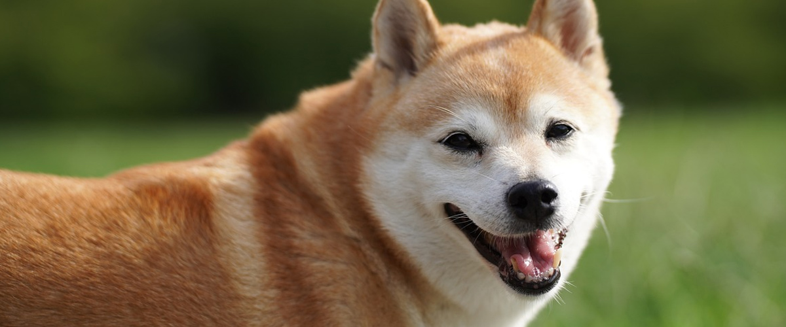

柴犬について
柴犬（しばいぬ）は、日本原産の日本犬の一種。「しばけん」とも言われる。日本犬の中で唯一の小型犬で、オスは体高38 - 41 cm、メスは35 - 38 cmの犬種。基本的には小型犬に分類される。最近では中型犬に分類される事もある。
日本の天然記念物に指定された7つの日本犬種（現存は6犬種）の1つで、指定は1936年（昭和11年）12月16日。日本における飼育頭数は最も多い。日本犬保存会（日保）によれば、現在日本で飼育されている日本犬種（6犬種）のうち、柴犬は約80%を占める。
日本国外でも人気が高く、日本語の読みをそのままローマ字にした「Shiba Inu」、略称の「Shiba」という名前で呼ばれている。
名前の由来
「柴犬」という名前は中央高地で使われていたもので、文献上では、昭和初期の日本犬保存会の会誌『日本犬』で用いられている。一般的には、「柴」は小ぶりな雑木を指す。
由来には諸説があり、以下の3説が代表的である。
- 柴藪を巧みにくぐり抜けて猟を助けることから。
- 赤褐色の毛色が枯れ柴に似ている（柴赤）ことから。
- 小さなものを表す古語の「柴」から。
柴犬の特徴・性格
お問い合わせ
- メールでのお問い合わせ
- info@shiba-inu.co.jp